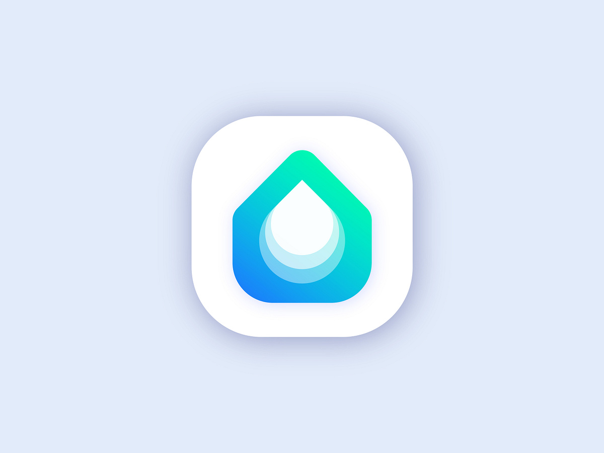

Las ODS
¿Qué son las ODS?
Las ODS (Objetivos de Desarrollo Sostenible) son un conjunto de 17 metas globales adoptadas por las Naciones Unidas en 2015 como parte de la Agenda 2030 para el desarrollo sostenible. Estas metas tienen como objetivo abordar los principales desafíos sociales, económicos y ambientales del mundo, buscando mejorar la vida de las personas, proteger el planeta y fomentar la paz y la prosperidad para todos.
Conozca más
